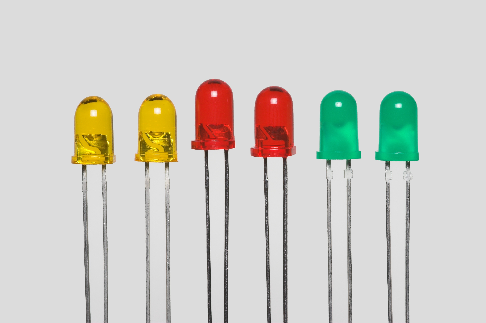
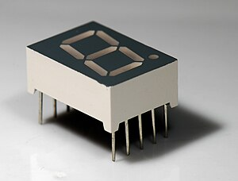
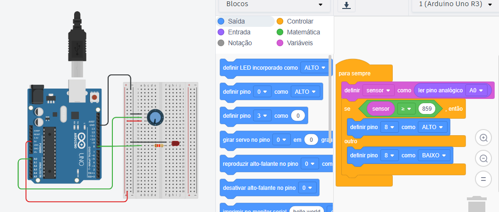
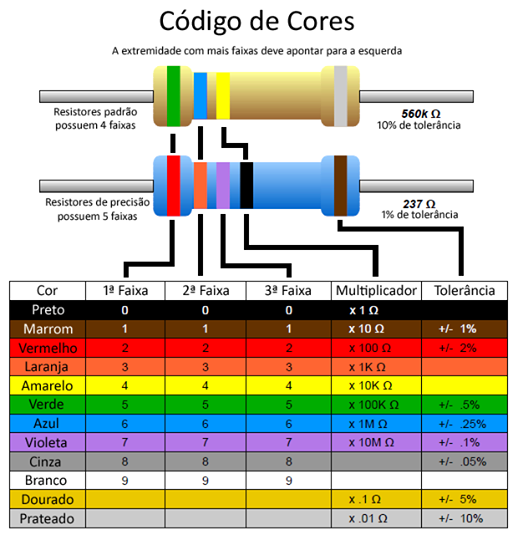

Eletroeletronica
O que é?
Na eletrônica, componentes como resistores, LEDs e displays de sete segmentos são usados para controlar e exibir dados. O Arduino facilita a criação de projetos interativos, permitindo conectar sensores e LEDs, controlando-os via programação. O multímetro é indispensável para medir tensão, corrente e resistência em circuitos, enquanto o Tinkercad permite simulações virtuais antes de montar os circuitos fisicamente. Esses recursos são essenciais em projetos eletrônicos práticos.
Multimetro
O multímetro é um dispositivo de medição utilizado para medir tensão (V), corrente (A), resistência (Ω) e outras propriedades elétricas. Ele é fundamental na eletrônica para realizar diagnósticos e verificar o funcionamento de circuitos.
LED
O LED é um componente que emite luz quando recebe corrente elétrica, sendo amplamente utilizado como indicador visual em circuitos.
Placa arduino

A placa Arduino é uma plataforma de prototipagem eletrônica com hardware e software de código aberto, muito utilizada para projetos com sensores, LEDs, motores e outros componentes, versões mais conhecidas: Arduino Uno e o Arduino Mega.
Display 7 segmentos
O display de sete segmentos é formado por sete LEDs dispostos em um formato de número oito, possibilitando a exibição de dígitos de 0 a 9. Ele é amplamente utilizado em dispositivos eletrônicos, como calculadoras e relógios digitais, para mostrar números.
Tinkercad
O Tinkercad é uma ferramenta online que permite projetar em 3D e simular circuitos eletrônicos. Por exemplo, é possível criar um circuito simples com um LED, resistor e potenciômetro, onde o LED acende ou apaga conforme o ajuste do potenciômetro. A plataforma oferece uma representação fiel do circuito, e uma captura de tela pode mostrar como os componentes estão dispostos e conectados.
Entradas
Analógica
As entradas analógicas do Arduino possibilitam a leitura de sinais variáveis, como a tensão proveniente de sensores de luz ou temperatura. A placa converte esses valores analógicos, que mudam de forma contínua, em números digitais que variam de 0 a 1023, facilitando a comunicação com os sensores e a integração com o sistema.
Digital
As entradas digitais no Arduino capturam sinais com dois possíveis estados: ligado (HIGH, 5V) ou desligado (LOW, 0V). Elas são ideais para detectar eventos simples, como o pressionamento de botões, onde apenas esses dois níveis de sinal são necessários para o funcionamento.
Saidas
Analógica - PMW
O Arduino não possui uma saída analógica real, mas utiliza saídas PWM (modulação por largura de pulso), que emulam uma saída analógica. Através do PWM, é possível ajustar a luminosidade de LEDs ou regular a velocidade de motores.
Digital
As saídas digitais no Arduino emitem sinais em dois estados (HIGH ou LOW), sendo utilizadas para acionar ou desativar componentes básicos, como LEDs, ou para controlar relés que gerenciam dispositivos de maior porte.
Resistores e códigos de cores
Os resistores são componentes que restringem o fluxo de corrente em um circuito elétrico. Eles têm valores de resistência variáveis, medidos em ohms (Ω). O valor de resistência de um resistor é normalmente indicado por faixas coloridas em seu corpo, que seguem um código de cores específico. Cada cor corresponde a um número, e a combinação dessas cores permite calcular a resistência do resistor, além de sua tolerância.
